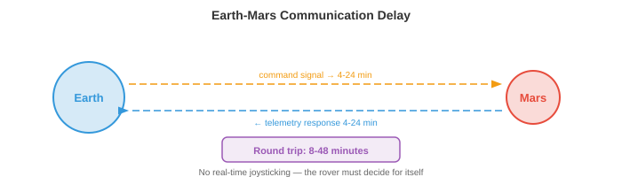
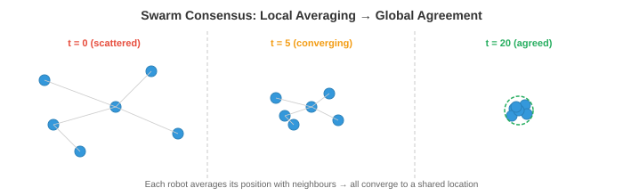
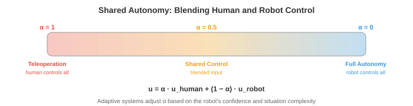

太空与极端环境机器人¶
一句话总结：太空与极端环境把自主性推到极限——通信延迟、辐射、崎岖地形迫使机器人必须靠自己思考，从火星车到深海 AUV，从灾难救援到蜂群协同，都要在算力、带宽、可靠性三重紧箍咒下自己搞定一切。
太空与极端环境机器人把自主性推到极限，通信延迟、辐射与非结构化地形要求机器人自己思考。本节涵盖行星车、在轨服务、通信受限自主、抗辐射计算、水下机器人、搜救、蜂群机器人以及人机交互。
-
本章前面我们研究的自主系统，都工作在相对温和的环境里：有车道线的公路、地面平整的仓库、物体类别已知的厨房。但机器人最有影响力的一些应用，恰恰是在人类去不了、或者人类去的代价极高的环境：火星表面、深海海底、核事故现场、燃烧的建筑物。
-
这些极端环境有共同的挑战：通信受限或延迟、地形非结构化且不可预测、硬件必须扛住恶劣条件、附近没有人可以帮忙修理。机器人必须真正自主，而不是"人盯着屏幕的伪自主"。
太空机器人¶
-
太空是终极极端环境。没有空气，温度从 -170°C 摆动到 +120°C，辐射轰击电子设备，而援助在数百万公里之外。太空机器人必须极其可靠、节能且自主。
-
行星车 (planetary rover) 是探索其他星球表面的移动机器人。NASA 的火星车 (Spirit、Opportunity、Curiosity、Perseverance) 是最出名的例子。每一代都比上一代更自主。

-
最根本的约束是通信延迟。火星距离地球 4-24 分钟无线电时延 (取决于轨道位置)，所以一个来回要 8-48 分钟。你没法遥控杆实时驾驶火星车。它遇到一块石头，也不能问地球该怎么办再干等半小时回答。它必须自己拿主意。
-
早期火星车 (Spirit、Opportunity) 严重依赖"地面在环 (ground-in-the-loop)"规划：人类研究照片、规划路径、上传指令，火星车执行。一个驱动周期要用掉一整个火星日 (sol)。这样火星车每 sol 大概只能走 50-100 米。
-
Curiosity 和 Perseverance 上的 AutoNav (自主导航，Autonomous Navigation) 大幅提升了自主性。火星车用立体相机构建局部 3D 地图 (回想第 8 章的立体深度)，评估地形可通行性 (坡度、粗糙度、石头大小)，并用带有可通行性代价图的栅格规划器规划安全路径。人类团队睡觉时火星车自主行驶，单日行驶距离提升到 100+ 米。
-
火星车的感知流水线受限于抗辐射处理器，其算力比消费级硬件慢好几个数量级 (下面会讲)。算法必须计算节俭：用经典立体匹配而不是深度神经网络，用简单的代价图规划器而不是学出来的策略。
-
在轨服务 (orbital servicing) 指的是在轨道上对卫星进行检查、维修、加注燃料或离轨的机器人。随着太空越来越拥挤，这是一个正在成长的领域。像 OSAM-1 (NASA) 这样的任务以及商业公司 (Astroscale、Northrop Grumman MEV) 用机械臂和对接机构对卫星进行服务。
-
挑战在于近距离操作 (proximity operations)：服务航天器必须靠近目标卫星 (可能翻滚、不合作、缺少对接接口) 并在微重力下完成精细操作。基于视觉的位姿估计 (从相机图像确定目标的 3D 位置和姿态) 是关键。这用到第 8 章的技术：特征检测、PnP (Perspective-n-Point) 求解，以及近年来的基于深度学习的位姿估计器。
-
卫星巡检用小型航天器目视检查其他卫星的损伤或异常。巡检器必须自主地围绕目标导航、避免碰撞、从最佳视角拍摄高分辨率图像。这是一个规划问题：找到一条覆盖所有巡检点的轨迹，同时满足燃料约束、光照条件和碰撞规避。
通信约束¶
-
在太空，通信受制于光速、可用带宽和轨道几何 (火星背面的火星车根本没法直接与地球通信，得靠中继卫星)。
-
这些约束从根本上改变了自主性架构。在地球上，机器人可以把高清视频流传到云服务器，在 GPU 集群上跑推理，毫秒级收到指令。在太空，机器人必须在船上做完一切。
-
高延迟意味着机器人必须在没有实时人类指导下规划和行动。自主软件必须处理正常操作、检测异常、应对危险，不能等人类回复。这要求鲁棒的船上状态估计、故障检测和应急规划。
-
有限带宽意味着机器人不能传输原始传感器数据。一张高分辨率图像可能几兆字节，但直接地火链路的数据率只有几千比特每秒 (通过轨道中继会高一些，但仍然有限)。机器人必须激进地压缩数据、优先决定发送哪些数据，并在本地做出大多数决策。
-
通信窗口是断续的。火星车只能在特定的轨道几何下与地球通信，通常一个 sol 只有几小时经中继卫星。窗口之外，火星车完全靠自己。
-
这对 AI 的启示是：船上自主性必须高度可靠。系统需要检测出问题 (轮子卡住了、传感器失效了、前方地形无法通行)，决定安全响应，并持续运行到下一个通信窗口，那时它可以回报并接收更新的指令。
抗辐射计算¶
-
太空充斥电离辐射：宇宙射线、太阳粒子事件，以及行星磁场中的辐射带。高能粒子会翻转内存中的比特 (单粒子翻转 (Single-Event Upset, SEU))、永久损坏晶体管 (总电离剂量 (Total Ionising Dose, TID))，或者在电路中造成毁灭性的锁定 (latch-up)。
-
抗辐射 (radiation-hardened, rad-hard) 处理器就是为了扛住这种环境设计的。它们用更大的晶体管几何、冗余逻辑 (三模冗余：每个电路做三份，对输出结果投票) 以及专门的制造工艺。代价是性能：一颗最先进的抗辐射处理器可能只有 200 MIPS，而消费级 GPU 是每秒数十亿次运算。
-
RAD750 (BAE Systems) 驱动了 Curiosity 以及许多其他航天器。它运行在 200 MHz，有大约 400 MIPS 的处理能力，相当于 1990 年代中期的桌面电脑。Perseverance 用的是同一档次的处理器。在这种硬件上跑一个现代神经网络 (几百万参数、数十亿次乘累加) 是不可行的。
-
模型压缩因此至关重要。第 6 章的那些技术 (量化、剪枝、知识蒸馏) 用来把神经网络缩到能塞进这种极端算力预算里。一个在笔记本 GPU 上毫秒完成的模型，在抗辐射处理器上可能要几分钟，甚至根本装不进内存。
-
另一条路是用商用现成 (Commercial Off-The-Shelf, COTS) 处理器，在软件里做辐射缓解：纠错码、看门狗定时器、定期内存刷洗，以及优雅降级策略。一些现代任务用这条路，换取更强的算力，代价是软件复杂度和风险都增加。
-
未来的行星任务正在探索现场可编程门阵列 (Field-Programmable Gate Array, FPGA) 与专用 AI 加速器，它们既能抗辐射，又能提供远超传统抗辐射 CPU 的算力，有可能首次实现船上深度学习。
非结构化地形中的自主导航¶
-
在地球上，道路是平的、标线清楚、有地图。在火星、月球或灾难现场，没有路。地形是非结构化的：石头、斜坡、沙地、裂缝，以及可能承受不住机器人重量的地面。
-
地形分类评估每一块地面是否安全可通行。特征包括：坡度 (从 3D 重建得到)、粗糙度 (表面法向的方差)、石头密度、土壤类型。经典做法从立体深度图计算这些特征；现代做法在视觉和几何特征上跑学出来的分类器。
-
视觉惯性里程计 (Visual-Inertial Odometry, VIO) 通过跨帧跟踪视觉特征并融合 IMU 测量来估计机器人的运动。这是核心的 SLAM 组件 (第 8 章)，针对极端条件做了适配。在火星上，VIO 必须应对：无特征的沙地 (可跟踪的视觉特征很少)、严酷的光照 (极端阴影) 和有限的算力。
-
估计通过扩展卡尔曼滤波 (Extended Kalman Filter, EKF) 或因子图优化来融合视觉与惯性数据。状态向量包括位置、速度、姿态和 IMU 偏置。预测步用 IMU 积分:
-
这里 \(\mathbf{u}_t\) 是 IMU 测量 (加速度和角速度)。更新步用视觉特征观测修正预测。这就是贝叶斯估计 (第 5 章): IMU 提供先验，视觉观测更新信念。
-
危险规避 (hazard avoidance) 在行星着陆时至关重要。航天器向表面下降时，必须用船上相机或激光雷达实时识别安全着陆区。NASA 在 Perseverance 上的地形相对导航 (Terrain Relative Navigation, TRN) 系统，把船上相机图像与预加载的轨道地图比对，确定下降过程中的位置，然后避开危险地形。这才使得在 Jezero 陨石坑着陆成为可能——那是一个科学价值极高但地形危险的地点，对以往任务来说风险太大。
水下机器人¶
-
深海和太空一样陌生：压碎一切的压力 (在最深海底 1000+ 个大气压)、近乎为零的能见度、没有 GPS、通信受限。水下机器人对海洋科学、离岸基础设施巡检、深海采矿和搜救行动都是必不可少的。
-
自主水下航行器 (Autonomous Underwater Vehicle, AUV) 无缆运行，自带电源和算力。它们按预编程的巡测方案航行，或者用船上智能对新发现做出适应。AUV 用于海底测绘、管道巡检和环境监测。
-
遥控水下航行器 (Remotely Operated Vehicle, ROV) 用一根缆绳与水面母船相连，缆绳提供电力和通信。它们用于需要实时人类控制的任务：深海操作、施工、维修。缆绳消除了通信约束，但限制了作业半径，增加了操作复杂度。
-
声学通信是水下的主要通信方式 (无线电波在水中衰减极快)。声学调制解调器的数据率在几公里范围内是 1-10 kbps，相比陆地上无线电的每秒千兆比特差得远。这比火星通信还更受限，迫使 AUV 必须高度自主。
-
水下 SLAM 尤其困难。声呐 (sonar) 提供距离测量，但角分辨率差、噪声显著 (海底和水面的多径反射)。相机只在很近的距离工作 (清水中几米，浑浊时更短)。基于特征的视觉 SLAM (第 8 章) 必须为水下场景的独特视觉特性做适配：色彩衰减 (红光最先被吸收)、后向散射、人造光造成的亮斑和深阴影。
-
没有 GPS 时导航靠航位推算 (dead reckoning) (对多普勒速度计 (Doppler Velocity Log, DVL) 的速度积分——DVL 用声学多普勒频移测量相对海底的速度)，辅以偶尔浮出水面获取 GPS 定位或从水面应答器获取声学定位。这与纯 IMU 导航是一样的漂移问题：微小的速度误差在长时间任务中会累积。
搜救机器人¶
-
地震、建筑物倒塌或工业事故后，机器人可以进入对救援人员来说太危险的空间：结构不稳定的建筑、有毒环境、火场或狭窄空间。
-
需求包括：快速部署 (以分钟计，而不是小时)、在无 GPS 环境下运行 (建筑内部、地下)、能穿墙和废墟的鲁棒通信，以及在杂乱、部分坍塌、有碎片、灰尘、光线差的空间中导航的能力。
-
多机器人协同在搜救中很有价值，因为一支机器人团队能比单机器人更快覆盖大范围区域。挑战在于协同：机器人必须划分搜索区域、避免重复劳动、共享发现。
-
基于前沿的探索 (frontier-based exploration) 把机器人分配到已探索和未探索空间之间的边界 ("前沿")。每个机器人导航到最近的未探索前沿，绘图，然后前进。一个集中式或分布式规划器把前沿分配给机器人，使总探索时间最小。这是一个覆盖优化问题。
-
穿越废墟的通信不可靠。机器人可能与操作员和彼此失去联系。系统必须对间歇性通信鲁棒：每个机器人应能独立运行，构建自己的局部地图并自己拿决策，通信恢复时再合并信息。
蜂群机器人¶
-
蜂群机器人 (swarm robotics) 用大量简单、低成本的机器人，通过局部交互实现复杂的集体行为。没有单个机器人独自有能力，但整个蜂群作为整体能完成任何个体都做不到的任务。
-
灵感来自生物蜂群：蚂蚁用身体搭桥、蜜蜂对巢址集体决策、鱼群通过协同运动躲避天敌。每一种情况下，简单的局部规则 (跟着邻居走、避免碰撞、往食物那边走) 都能产生复杂的全局行为。
-
去中心化控制意味着没有中央指挥官。每个机器人遵循相同的局部规则，只对邻居和眼前环境做出反应。全局行为从这些局部交互中涌现 (emerges) 出来。这让蜂群天然鲁棒：一台机器人挂了，蜂群还在继续。没有单点故障。
-
共识算法 (consensus algorithm) 让蜂群只通过局部通信就能就集体决策达成一致 (例如：往哪个方向走、优先做哪个任务)。一个简单的共识协议是让每个机器人把自己的值与邻居的值取平均:

- 其中 \(N_i\) 是机器人 \(i\) 的邻居集合。反复迭代直到所有机器人收敛到同一个值 (全局平均)。收敛速度取决于通信图的拓扑，具体是它的代数连通度 (图拉普拉斯矩阵的第二小特征值，呼应第 2 章的特征值)。

-
群集算法 (flocking algorithm) (Reynolds 规则) 用三条简单的每机器人规则产生协同的群体运动:
- 分离 (Separation)：从太近的邻居身边转向 (避免碰撞)。
- 对齐 (Alignment)：向邻居的平均朝向转向 (往同一个方向走)。
- 内聚 (Cohesion)：向邻居的平均位置转向 (跟大群走)。
-
每条规则都是对机器人速度的一个向量贡献。这些向量的加权和产生自然的群集行为。这就是向量的线性组合 (第 1 章)，其中权重控制每种行为的相对重要性。
-
蜂群机器人的应用包括环境监测 (在大范围区域分布传感器)、精准农业 (协调无人机喷药)、施工 (机器人集体组装结构) 和搜救行动 (高效覆盖大区域)。
人机交互¶
- 大多数真实世界的自主系统都是与人类并肩工作，而不是孤立运行的。人机之间怎么交流、怎么分享控制、怎么建立信任，和机器人的技术能力同样重要。

-
共享自主 (shared autonomy) 把人类和机器人的控制混合起来。不是全遥操作 (人类控制一切) 或全自主 (机器人控制一切)，共享自主让人类提供高层意图，机器人处理底层执行。比如说，人类指着一个物体说"把它捡起来"，机器人就自主规划抓取和机械臂运动。
-
数学上，共享自主可以建模为人类输入 \(\mathbf{u}_h\) 与机器人自主动作 \(\mathbf{u}_r\) 的混合:
-
其中 \(\alpha \in [0, 1]\) 是混合参数。当 \(\alpha = 1\)，人类完全控制 (遥操作)。当 \(\alpha = 0\)，机器人完全自主。自适应共享自主根据情况调整 \(\alpha\)：机器人有把握时接管更多控制，不确定或情况新奇时让出控制。
-
遥操作 (teleoperation) 对于超出当前自主能力的任务仍然重要。人类操作员远程控制机器人，通过机器人的相机观察场景。挑战是延迟：哪怕 100ms 延迟都会让遥操作变得困难，而太空中数秒级的延迟让精细操作几乎不可能。预测显示 (显示机器人预测的未来状态) 和虚拟夹具 (软件引导，阻止操作员发出危险动作指令) 有助于补偿。
-
信任校准 (trust calibration) 是确保人类对机器人有恰当信任的问题：不能太多 (过度信任会导致麻痹，在需要时不介入)，也不能太少 (信任不足会导致不必要的介入和资源浪费)。信任应该校准到机器人的实际能力：在它擅长的场景相信它，在它能力边缘的场景保持怀疑。
-
研究表明，信任受以下因素影响：机器人的透明性 (它解释自己的决策吗?)、可靠性 (它是可预测地失败，还是随机地失败?)，以及沟通 (它表达自己的不确定性吗?)。一个会说"我 40% 确信这是安全路径，要走吗?"的机器人，让人类的决策比一个只会闷头往前开的机器人更容易做。
-
可读性 (legibility) 指的是机器人的运动能向附近的人类传达自己的意图。如果机器人去够一个物体，它的路径应该让人一眼看出它瞄的是哪个物体，甚至在还没抵达之前。这涉及规划能最大化观察者及早推断目标能力的轨迹，可以形式化为在已观测的部分轨迹条件下最大化真实目标的后验概率:
- 其中 \(G\) 是目标，\(\xi_{0:t}\) 是至今观察到的轨迹。这用到了贝叶斯推断 (第 5 章)：观察者对可能目标有一个先验，机器人的轨迹提供证据更新这个信念。
编程任务 (用 CoLab 或 notebook)¶
-
模拟一个蜂群共识算法，让机器人对一个目标位置达成一致。从随机初始位置开始，观察收敛过程。
import jax import jax.numpy as jnp import matplotlib.pyplot as plt n_robots = 10 rng = jax.random.PRNGKey(0) positions = jax.random.uniform(rng, (n_robots, 2), minval=-5, maxval=5) # 通信图: 每个机器人与最近的 3 个邻居通信 def get_neighbours(positions, k=3): dists = jnp.linalg.norm(positions[:, None] - positions[None, :], axis=-1) # 对每个机器人, 找 k 个最近的 (排除自己) neighbours = jnp.argsort(dists, axis=1)[:, 1:k+1] return neighbours history = [positions.copy()] for step in range(30): neighbours = get_neighbours(positions) new_positions = jnp.zeros_like(positions) for i in range(n_robots): nbr_pos = positions[neighbours[i]] new_positions = new_positions.at[i].set( (positions[i] + nbr_pos.sum(axis=0)) / (len(neighbours[i]) + 1) ) positions = new_positions history.append(positions.copy()) # 绘制收敛过程 fig, axes = plt.subplots(1, 3, figsize=(15, 4)) for ax, step_idx, title in zip(axes, [0, 10, 29], ["Initial", "Step 10", "Final"]): h = history[step_idx] ax.scatter(h[:, 0], h[:, 1], s=50) ax.set_xlim(-6, 6); ax.set_ylim(-6, 6) ax.set_aspect("equal"); ax.grid(True); ax.set_title(title) plt.suptitle("Swarm Consensus: Robots Converge to Agreement") plt.tight_layout() plt.show() -
实现 Reynolds 群集规则 (分离、对齐、内聚) 并模拟蜂群协同移动。
import jax import jax.numpy as jnp import matplotlib.pyplot as plt n = 30 rng = jax.random.PRNGKey(1) k1, k2 = jax.random.split(rng) pos = jax.random.uniform(k1, (n, 2), minval=-5, maxval=5) vel = jax.random.uniform(k2, (n, 2), minval=-0.5, maxval=0.5) dt = 0.1 separation_radius = 1.0 neighbour_radius = 3.0 trajectories = [pos.copy()] for _ in range(200): new_vel = jnp.zeros_like(vel) for i in range(n): diffs = pos - pos[i] dists = jnp.linalg.norm(diffs, axis=1) # 半径内的邻居 (排除自己) nbr_mask = (dists < neighbour_radius) & (dists > 0) sep_mask = (dists < separation_radius) & (dists > 0) # 分离: 从非常近的邻居身边转向 if sep_mask.any(): sep = -diffs[sep_mask].sum(axis=0) else: sep = jnp.zeros(2) # 对齐: 匹配邻居的平均速度 if nbr_mask.any(): align = vel[nbr_mask].mean(axis=0) - vel[i] else: align = jnp.zeros(2) # 内聚: 向邻居的平均位置转向 if nbr_mask.any(): cohesion = pos[nbr_mask].mean(axis=0) - pos[i] else: cohesion = jnp.zeros(2) new_vel = new_vel.at[i].set(vel[i] + 1.5 * sep + 0.5 * align + 0.3 * cohesion) # 限制速度 speeds = jnp.linalg.norm(new_vel, axis=1, keepdims=True) vel = jnp.where(speeds > 2.0, new_vel / speeds * 2.0, new_vel) pos = pos + vel * dt trajectories.append(pos.copy()) # 绘制快照 fig, axes = plt.subplots(1, 3, figsize=(15, 4)) for ax, idx, title in zip(axes, [0, 50, 199], ["Start", "Step 50", "Step 200"]): p = trajectories[idx] v = vel if idx == 199 else jnp.zeros_like(vel) ax.scatter(p[:, 0], p[:, 1], s=20, c="blue") ax.set_aspect("equal"); ax.grid(True); ax.set_title(title) lim = max(abs(p).max() + 1, 6) ax.set_xlim(-lim, lim); ax.set_ylim(-lim, lim) plt.suptitle("Reynolds' Flocking: Separation + Alignment + Cohesion") plt.tight_layout() plt.show() -
模拟共享自主混合：人类提供带噪声的方向输入，机器人自主系统提供平滑的到达目标的路径。用不同的 alpha 值混合两者。
import jax import jax.numpy as jnp import matplotlib.pyplot as plt goal = jnp.array([10.0, 5.0]) pos = jnp.array([0.0, 0.0]) dt = 0.1 rng = jax.random.PRNGKey(3) fig, axes = plt.subplots(1, 3, figsize=(15, 4)) for ax, alpha in zip(axes, [1.0, 0.5, 0.0]): pos = jnp.array([0.0, 0.0]) path = [pos.copy()] for step in range(150): # 机器人自主: 到目标的平滑路径 direction = goal - pos u_robot = direction / (jnp.linalg.norm(direction) + 1e-6) * 1.0 # 人类输入: 大致方向正确, 但带噪声 noise = jax.random.normal(jax.random.fold_in(rng, step), (2,)) * 0.5 u_human = u_robot + noise # 混合 u = alpha * u_human + (1 - alpha) * u_robot pos = pos + u * dt path.append(pos.copy()) if jnp.linalg.norm(pos - goal) < 0.3: break path = jnp.stack(path) ax.plot(path[:, 0], path[:, 1], "b-", alpha=0.7) ax.plot(*goal, "r*", markersize=15) ax.plot(0, 0, "go", markersize=10) ax.set_title(f"α={alpha:.1f} ({'human' if alpha==1 else 'robot' if alpha==0 else 'shared'})") ax.set_xlim(-1, 12); ax.set_ylim(-3, 8) ax.set_aspect("equal"); ax.grid(True) plt.suptitle("Shared Autonomy: Blending Human and Robot Control") plt.tight_layout() plt.show()
📌 本节要点¶
- 通信延迟主导火星任务：地火往返 8-48 分钟，火星车必须靠 AutoNav 自主导航，不能被实时遥控。
- 抗辐射处理器算力极低: RAD750 仅约 400 MIPS，现代神经网络必须靠量化、剪枝、蒸馏才能塞进去。
- 在轨服务靠位姿估计：服务航天器用 PnP + 深度学习估计目标位姿，完成微重力下的近距离对接。
- VIO 融合视觉与 IMU：用 EKF 或因子图，以 IMU 做先验、视觉观测做更新，是贝叶斯估计的典型应用。
- 水下声学通信 1-10 kbps：比火星通信还窄，迫使 AUV 高度自主，主要靠 DVL 做航位推算。
- 搜救靠前沿探索+多机器人：每个机器人独立建图、间歇通信时合并，应对废墟中的通信中断。
- 蜂群靠局部规则涌现全局行为：共识算法用邻居平均达成一致，Reynolds 三规则 (分离/对齐/内聚) 产生群集。
- 共享自主用 \(\alpha\) 混合控制: \(\alpha=1\) 是遥操作，\(\alpha=0\) 是全自主，自适应根据置信度调整。
- 信任校准与可读性：机器人应表达不确定性、以可读的运动传达意图，帮助人类做出恰当决策。
- 极端环境共同挑战：通信受限、地形非结构化、硬件严苛、无人救援——四条约束合在一起把自主性推到极限。